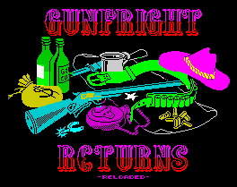
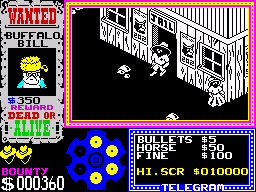

Gun Fright Returns Reloaded


{kind=link}

| Created by: | TomCaT, GoodBoy, tiboh, Panda |
| Price: | Free |
| Year: | 2017 |
Gun Fright Returns - Reloaded is a remastered version of the classic game originally released in 1985 by Ashby Computers & Graphics Ltd. This 2017 version, developed by TomCat, GoodBoy, Tiboh, and panda, enhances the original with improved gameplay, music, and special effects. The game retains its Wild West theme, where players take on the role of a sheriff aiming to capture outlaws and earn rewards.

The gameplay involves navigating through a town, interacting with various characters, and engaging in duels with bandits. Players must be strategic, using the environment to their advantage while avoiding obstacles like cacti and tumbleweeds. The game offers different difficulty levels, allowing players to tailor their experience based on their preferences.
One of the key features is the use of a Kempston mouse for aiming, which adds a layer of precision to the shooting mechanics. The game also introduces a map generator, providing a fresh experience with each playthrough. Additionally, players can choose from multiple towns and face varying challenges as they progress.
The soundtrack, imported from the Amstrad version, enhances the atmosphere, while visual effects in the intro set the stage for an engaging experience. With its blend of action and strategy, Gun Fright Returns - Reloaded offers a nostalgic yet fresh take on a classic title.